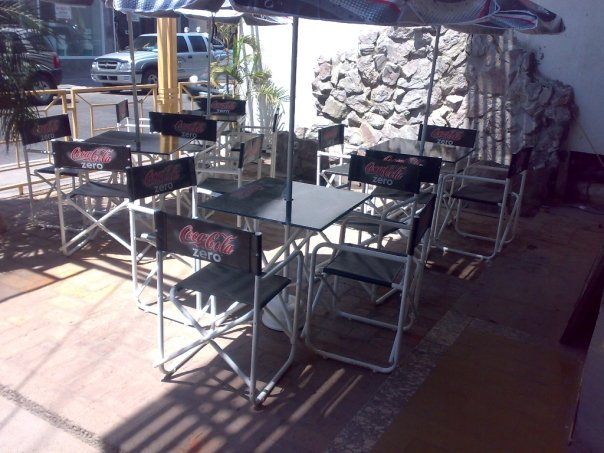
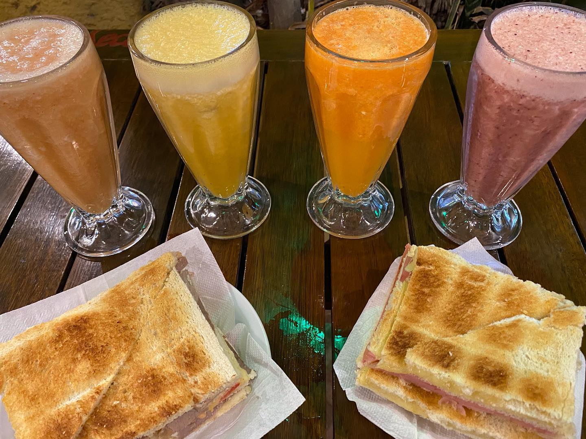
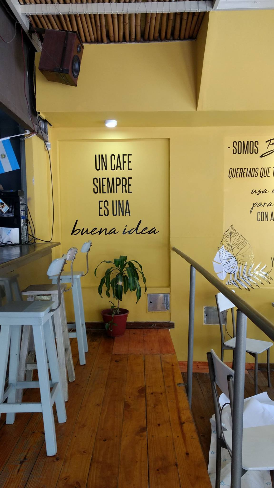
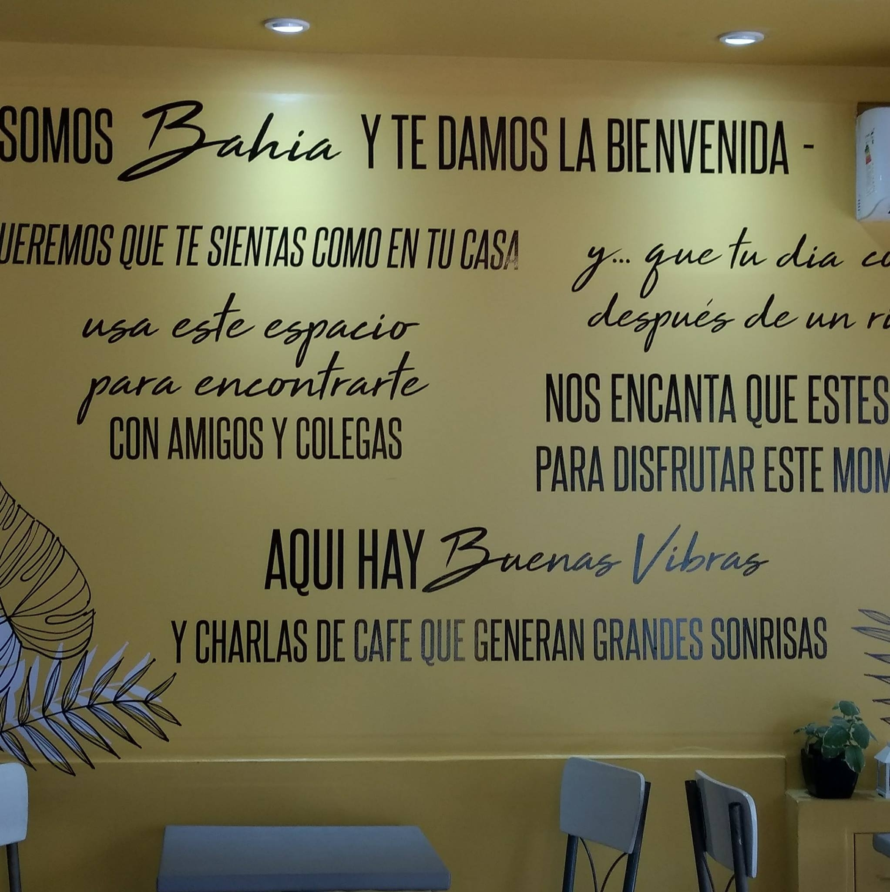

Bahia nace en el año 2003 como un juego entre amigos. Pedro Saad y Raul "Chinchin" Ruiz, deciden tener su propio bar. Pedro, Licenciado en administración de empresas, Chinchin comerciante, se ponen manos a la obra y abren la primera sucursal de Bar Bahia 24. Sus inicios fueron como un bar chico, pero Pedro se especializó en la elaboración de cocteles realizando cursos de cocteleria con profesores de distintos puntos del pais.
 En sus inicios se hizo popular justamente por tener los mejores tragos de la provincia, seguido por su menú de comidas que siempre destacó. Con el pasar de los años la idea central fue mutando, se agregó la cafeteria durante el día, se abrieron sucursales y se cambio el estilo fresco "de playa" (de ahi el nombre bahia) por un estilo mas moderno.
En 2007 Chinchin vende su parte del Bar a Pedro, quien se dedica de lleno a éste dejando sus otros negocios y haciendolo crecer como nunca se lo esperó e incorporando a toda la familia en la, ahora, empresa familiar. 
 En el año 2012 Pedro debe hacerse cargo de la empresa de su fallecido padre y no puede seguir con el bar, por lo que este queda en manos de su esposa e hijos, y da un giro de 180 grados con respecto a su visión. Hoy, Bahia Café es destacado en la provincia por su cafeteria y pasteleria. Un barista se encarga de las mezclas de granos para obtener el mejor café de la provincia. El bar ya no trabaja en horario nocturno y tampoco elabora comidas. Un cambio radical, pero siempr destacando en su rama...
Hoy en día la cabeza del bar son los hijos del matrimonio, los cuales dedican medio tiempo a este, ayudado por los encargados que vieron nacer y crecer al bar. Esta es la breve historia de esta empresa pequeña, familiar y que siempre busca brindar la mas calida atención y los mejores productos a sus clientes.
